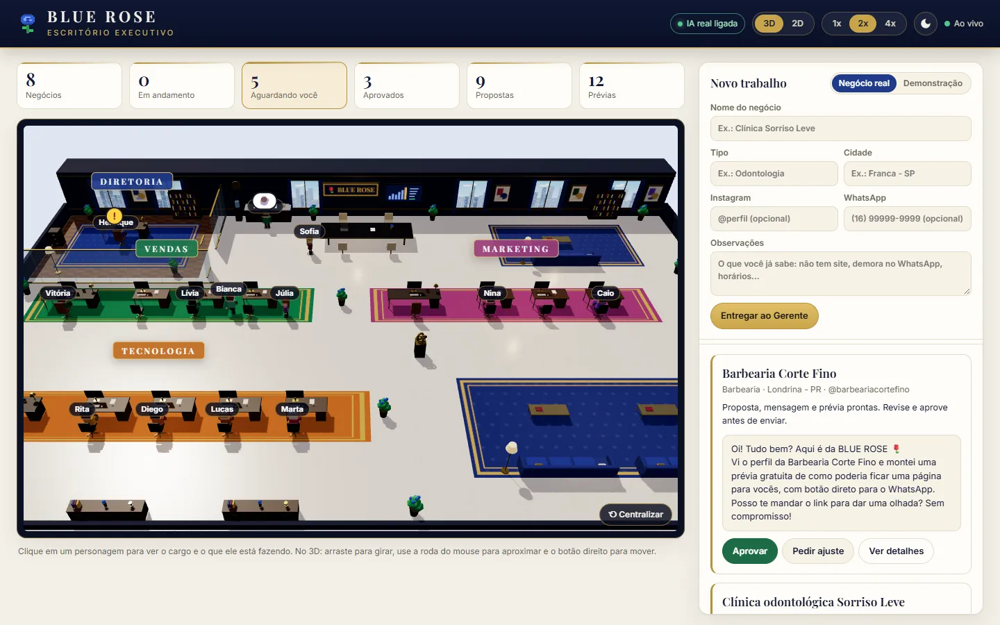
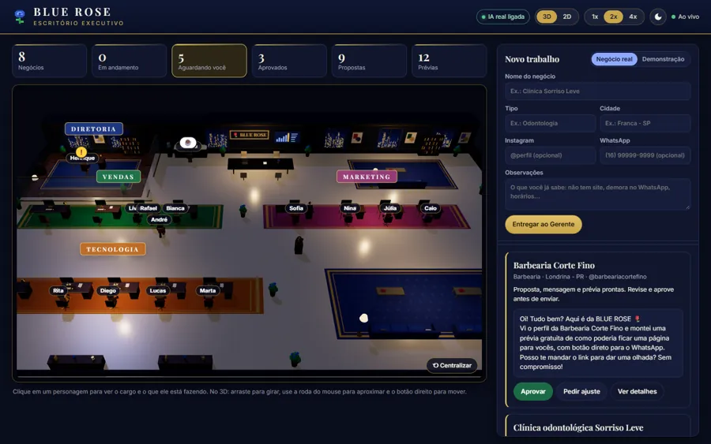
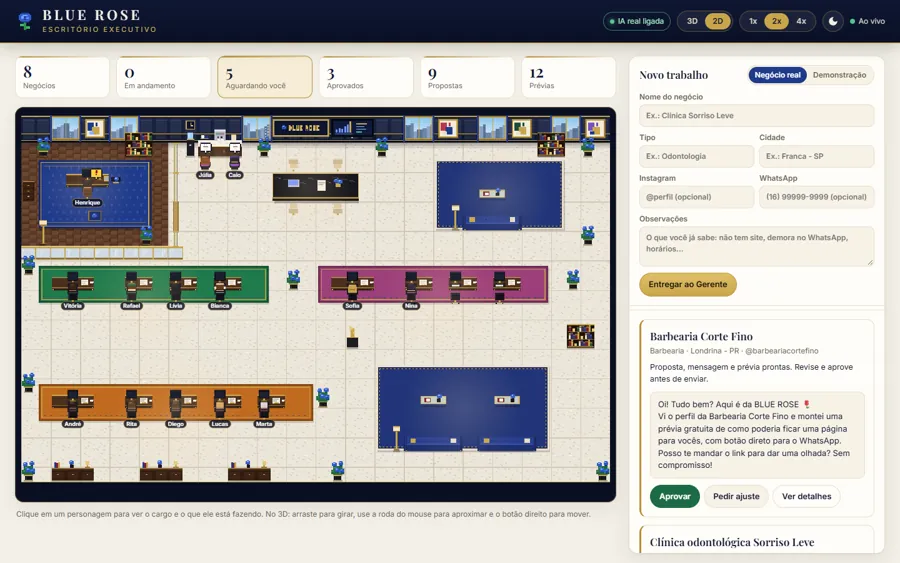

BLUE ROSE Office
A virtual office where 14 AI agents, each with a name and a role, prospect local businesses and assemble the sales package. You approve before anything is sent.



Problem
Selling a website and automation to a local business means understanding the business, creating an identity, writing a proposal, building a preview, reviewing and preparing replies. By hand, that takes hours per client.
Solution
A team of agents with defined roles (CEO, sales, marketing and technology) works through a queue: each one gets the task, does its part with AI and hands it to the next.
If the AI fails or there is no key configured, the system logs the error and keeps going in simulated mode.
Result
Each business gets a full package: analysis, visual identity, content, a local ad, proposal, site preview, SEO, automation script and replies. Everything stops at “awaiting approval”: sending is always done by a person.
How it works
- Youregister a business in the form
- Salesanalyzes its online presence and potential
- Marketingidentity, content and a local ad
- Saleswrites the proposal and message
- TechnologySEO, site preview and automation script
- QAreviews and sends back if needed
- You approveand send it yourself
Key features
- Structured output: the AI answers in JSON validated against a schema, so nothing breaks the flow.
- Persistent queue: every agent's tasks are stored in the database; if the app closes, it resumes where it stopped.
- Real time: the panel and the 3D office update over WebSocket.
- Autopilot (server side, off by default): searches real businesses using public data only, with a daily goal, working hours and one search at a time.
- Safe export: builds the WhatsApp link with the approved message, but you press send.
Technologies
- Node.js
- Express
- WebSocket
- SQLite (node:sqlite)
- Claude API
- Three.js
- Electron
- Supabase
- GitHub Actions
Validation
9 automated tests (the full flow through all 14 agents, autopilot, WhatsApp and the Supabase mirror) running on GitHub Actions. This review fixed a case where the autopilot could start a duplicate search while an agent was walking to hand over a task.